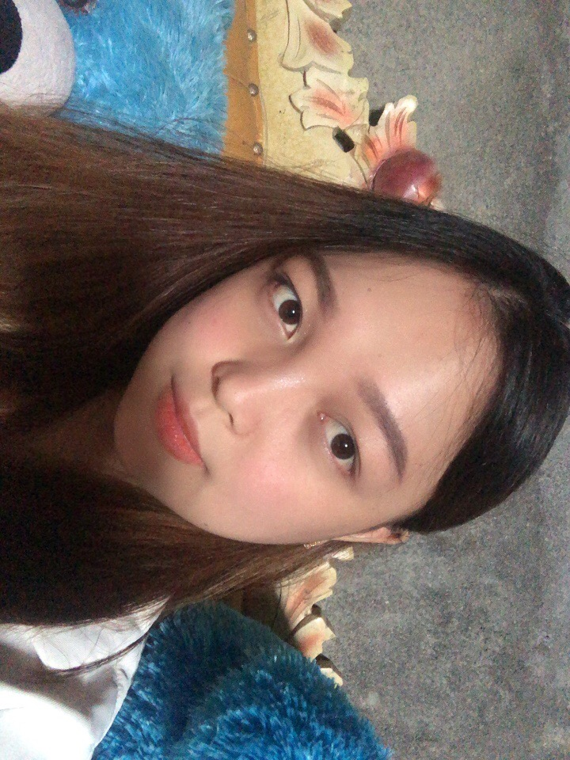

About Me
Hey world! I'm a world explorer on a mission to uncover wonders around every corner. U can call me viren.
i'm a dedicated coffee enthusiast and quite the expert at brewing the perfect cup. When I'm not out chasing
or concocting coffee magic, you might catch me lounging on the couch with my favorite book or chasing after
my mischievous cat who always seems to be up to no good. I believe life's too short not to laugh at yourself,
so I often find myself being the source of laughter among friends with my antics and silly jokes. Despite
sometimes being as scattered as a pair of socks missing its match in the laundry, I'm determined to bring
bright colors into this world with my never-ending smile and unwavering enthusiasm.
My Hobbies
- Listening Music
- Read Book
- Photography